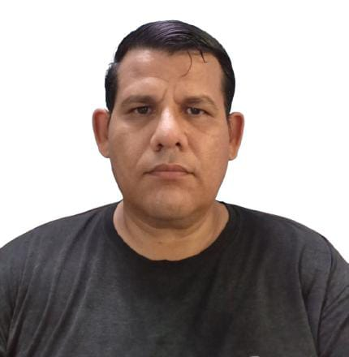

Ingeniero Full-Stack (React/Node) y Administrador de Sistemas Senior (Infraestructura / DevOps)
Email: robyirloreto@gmail.com
Ingeniero con perfil *cross-functional*, especializado en la gestión de proyectos desde la infraestructura física (Redes LAN, CCTV) hasta la capa de aplicación (Full-Stack React/Node). Sólida experiencia como Administrador de Sistemas Senior en servidores Linux (Samba, VPN) y bases de datos de misión crítica (Oracle 11g R2, SQL Server). Orientado al soporte integral (Hardware, Software y Redes) en entornos complejos y heterogéneos.
React Native (iOS/Android), ReactJS, Node.js / Express, JavaScript (ES6+), PHP, HTML5/CSS3/Tailwind, WordPress.
Oracle 11g R2 (Instalación y Configuración), SQL Server, MySQL / SQL, Linux (Admin, Oracle Linux, Debian), SSH / Samba, VPN (pptpd).
Redes LAN y Ponchado (Cableado Estructurado), CCTV / Videovigilancia, Configuración de Routers y Firewalls, Redireccionamiento de Puertos, Hostings y Dominios, Servicios PACS / DICOM.
Git / Control de Versiones, Firebase Cloud Messaging (FCM), Soporte Remoto (TeamViewer, Rustdesk), Virtualización, Diseño (Inkscape / GIMP), Stripe.